Updates, conference presentations, and research highlights from the TenJ Lab.
2026
June 13, 2026
Class of 2026: celebrating Dr. Lisa Diaz and Dr. Ralph Fontejon
At the UCLA School of Nursing 2026 commencement on June 13, the lab celebrated its newest graduates, with special congratulations to Dr. Lisa Diaz (PhD) and Dr. Ralph Fontejon (DNP). We are incredibly proud of all they have accomplished and excited for everything ahead of them.
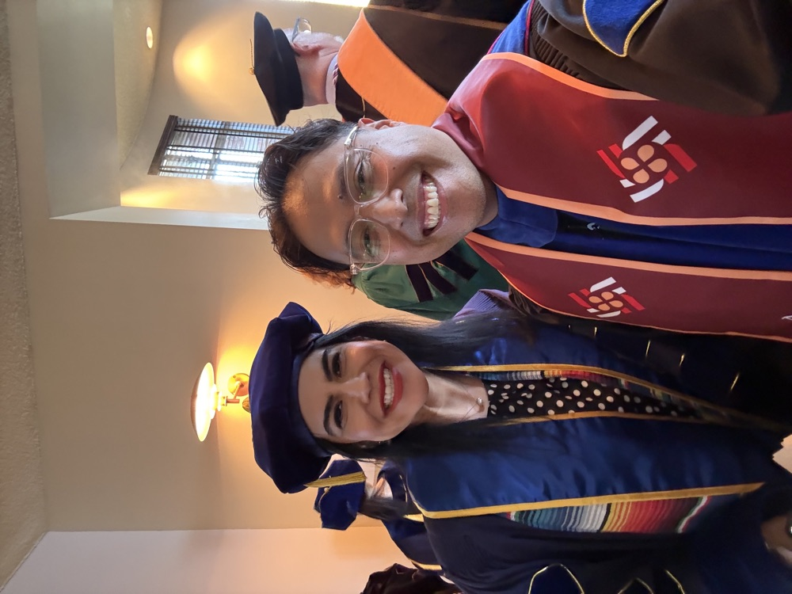
Dr. Lisa Diaz (PhD) at commencement.
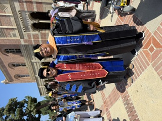
Dr. Tolentino with Dr. Ralph Fontejon (DNP).
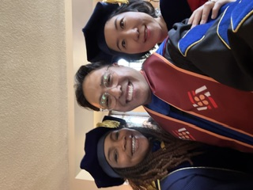
Celebrating the Class of 2026.
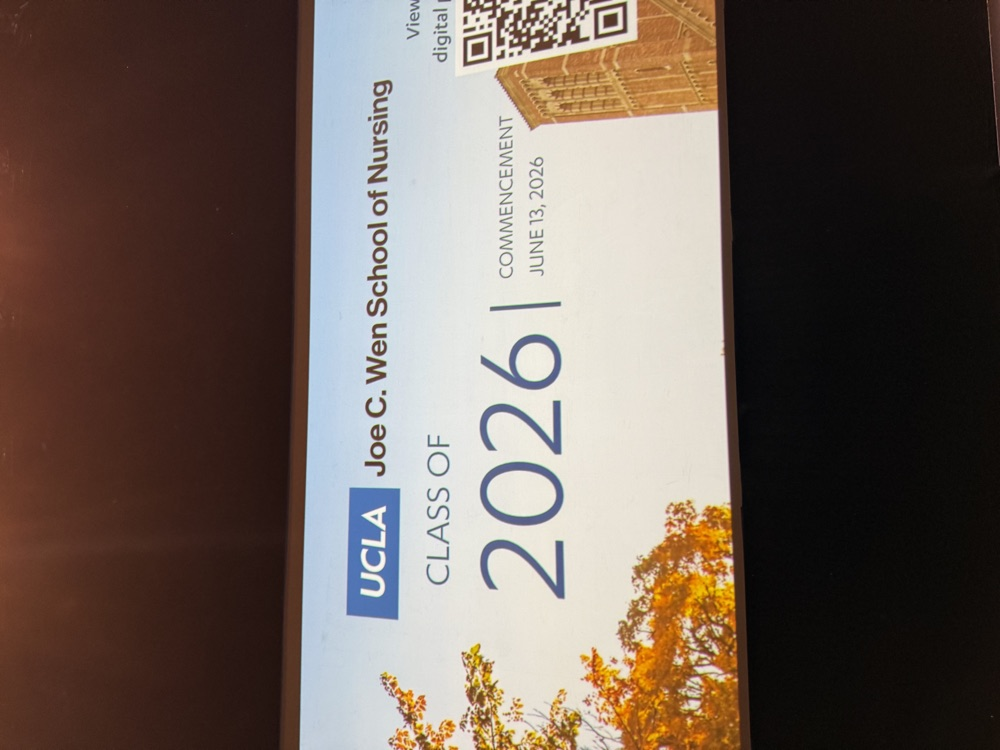
Commencement at UCLA.
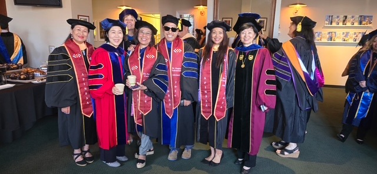
Celebrating the new doctors at the 2026 commencement.
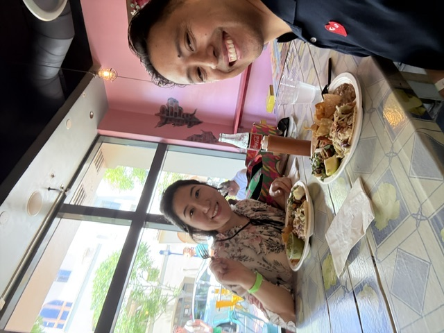
Dr. Park and Dr. Tolentino having lunch after commencement.
May 29, 2026
Lab research takes the stage at the 2026 UCLA Nursing Science and Innovation Conference
The TenJ Lab was well represented at the 2026 UCLA Nursing Science and Innovation Conference. Michael Le presented an integrative review on patient-facing AI for diabetes self-management. Nicole Cagulada and Allison Blancia shared qualitative results from the study on the intersection of culture and environment among Filipino healthcare workers during COVID-19. Ralph Fontejon presented his DNP project on implementing a culturally tailored outpatient case management program for Filipino Americans with type 2 diabetes. Paul Boy gave a podium presentation on the lab’s Racial and Social Justice Seed Grant study, “Understanding Filipino American Healthcare Experiences Through the Lens of Colonial History: Implications for Nursing Practice.”
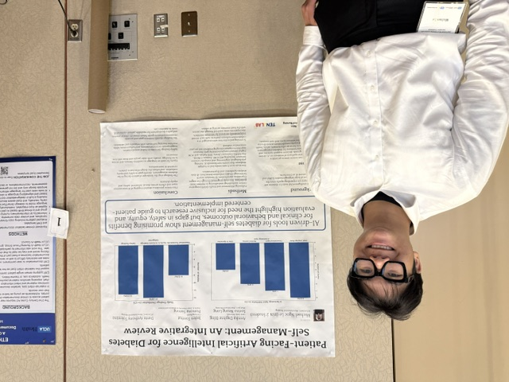
Michael presents an integrative review on patient-facing AI for diabetes self-management.
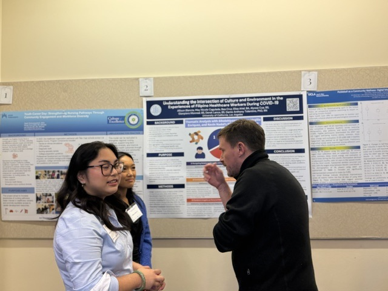
Nicole and Alison present qualitative results on Filipino healthcare workers during COVID-19.
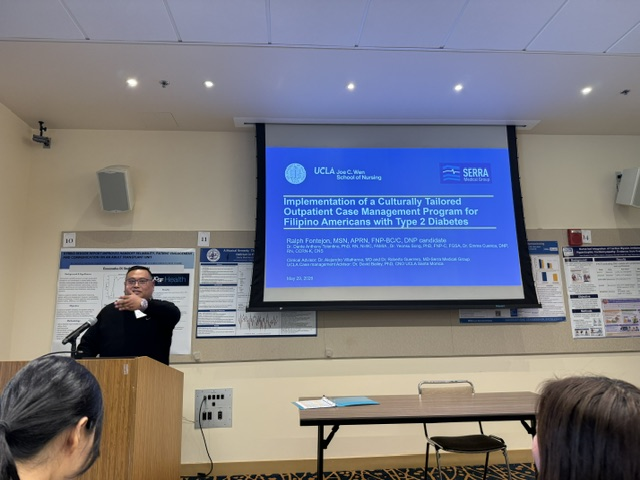
Ralph presents his DNP project on culturally tailored case management for Filipino Americans with type 2 diabetes.
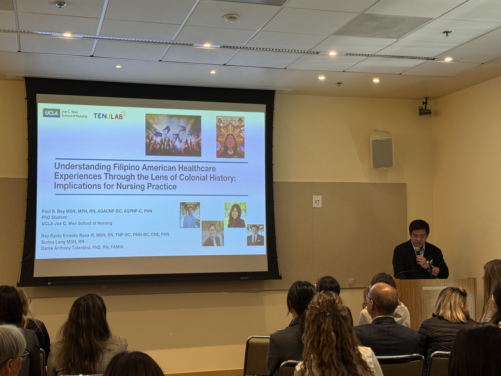
Paul gives a podium presentation on Filipino American healthcare experiences through the lens of colonial history.
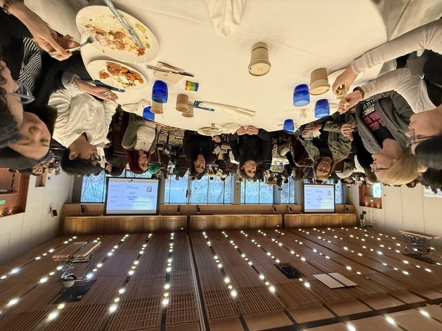
Lab members and colleagues at the conference luncheon.
May 29, 2026
Three DNP projects presented by Dr. Tolentino’s students
On May 29, 2026, three doctoral students Dr. Tolentino mentored on their committees presented their DNP projects. Ralph Fontejon (committee chair) presented “Implementation of a Culturally Tailored Outpatient Case Management Program for Filipino Americans with Type 2 Diabetes.” Elvia Mexicano (committee member) presented “Implementing Pequeños Cambios Diarios: Culturally Tailored Nutrition Counseling to Improve Waist-to-Height Ratio and Self-Efficacy in Hispanic Women.” Melanie Arakelian (committee member) presented “Reducing Polypharmacy in Older Adults Aged 65 to 75 Years Through Personalized Pharmacologic Care.”
Congratulations to all three on outstanding work and an important milestone toward their doctorates. Job well done!
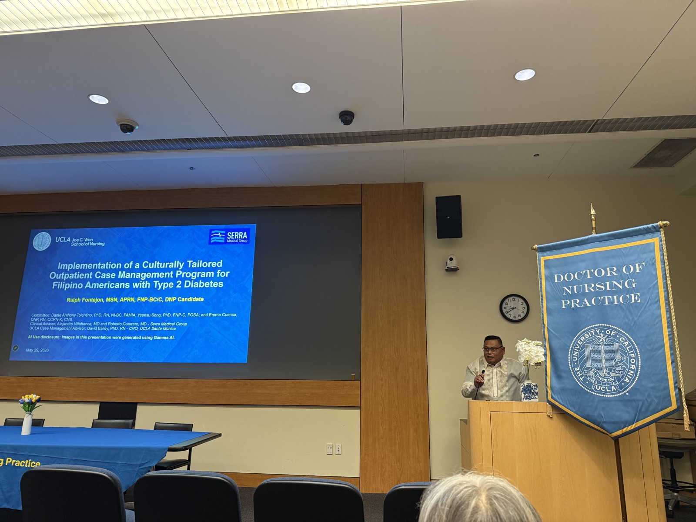
Ralph Fontejon presents his DNP project.
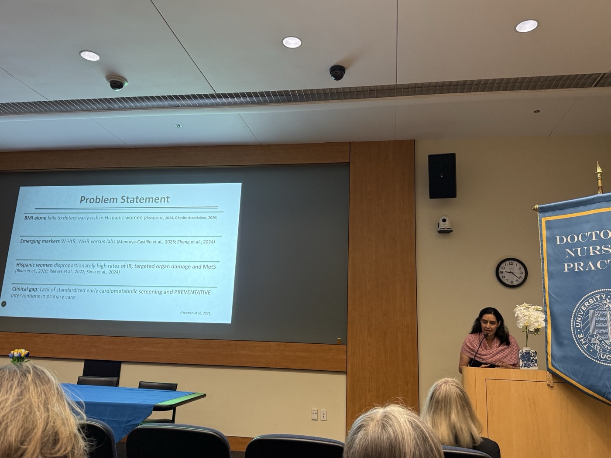
Elvia Mexicano presents her DNP project.
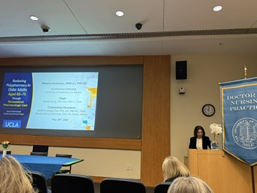
Melanie Arakelian presents her DNP project.
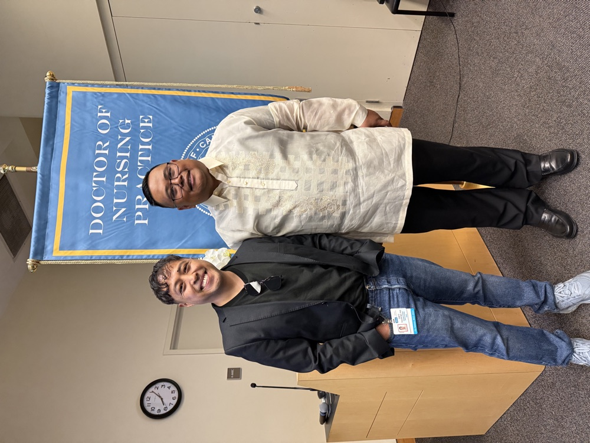
Dr. Tolentino with Ralph Fontejon.
May 27, 2026
Dr. Lisa Diaz defends her dissertation on social media and diabetes education
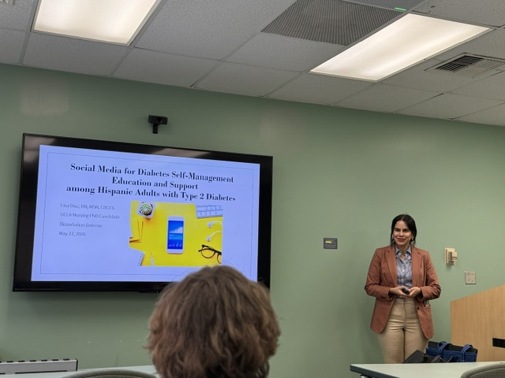
Congratulations to Lisa Diaz, PhD, RN, who successfully defended her dissertation on social media and diabetes self-management education and support (DSMES) among Hispanic populations. Lisa Diaz completed a three-manuscript dissertation and has already published the first paper, “Exploring the quality of TikTok-based diabetes self-management education in English and Spanish: A digital health study,” in The Science of Diabetes Self-Management and Care, with the remaining two manuscripts in preparation.
We could not be prouder of this accomplishment. Congratulations on a job well done, Dr. Diaz, and we cannot wait to see what is next for you!
May 18, 2026
Wearables and chronic conditions: the lab at AMIA Amplify in Denver
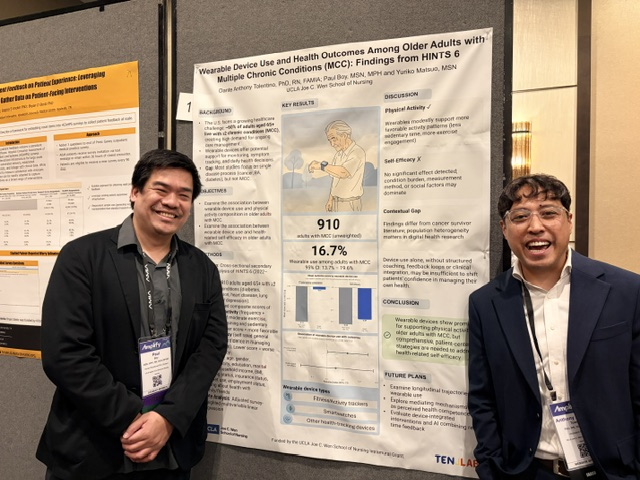
Dr. Tolentino and Paul Boy presented a poster, “Wearable device use and health outcomes among older adults with multiple chronic conditions: findings from HINTS 6,” at the AMIA Amplify Conference, held May 18 to 21, 2026 in Denver, Colorado. Drawing on the Health Information National Trends Survey (HINTS 6), the study examines how wearable device use relates to health outcomes among older adults managing multiple chronic conditions. The project is supported by UCLA School of Nursing Intramural Funding, and a full manuscript is underway.
AMIA Amplify is the American Medical Informatics Association’s applied clinical informatics conference, bringing together informaticists, clinicians, and researchers focused on turning health data and technology into better care at the bedside and in the community.
May 6, 2026
Dr. Annika Bilog defends her dissertation on Filipino American nurses’ mental health
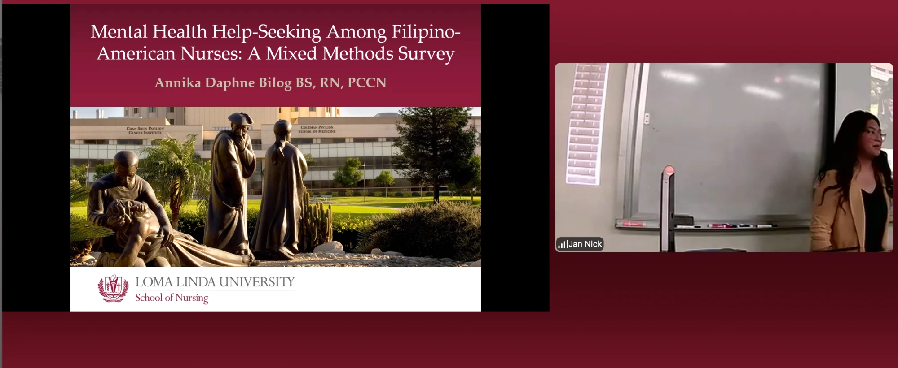
Congratulations to Annika Daphne Bilog, PhD, RN, PCCN, who successfully defended her dissertation, “Mental Health Help-Seeking Among Filipino American Nurses: A Mixed Methods Survey,” at Loma Linda University School of Nursing on May 6, 2026. Her mixed-methods study sheds light on the mental health needs of Filipino American nurses and the factors that help or hinder them from seeking support, a timely and important contribution to our community.
We are incredibly proud of Dr. Bilog. As she gets ready to begin her next chapter in New York, we could not be happier for her. Congratulations, Dr. Bilog!
April 21, 2026
A banner week at the 2026 Western Institute of Nursing Conference
The TenJ Lab had an outstanding showing at the 2026 Western Institute of Nursing (WIN) Conference, held April 21 to 24, 2026 at the Hilton San Francisco Union Square. Lab members presented across both poster and podium sessions, spanning the full breadth of our work.
Ralph Fontejon presented a poster on his DNP project implementing a culturally tailored outpatient case management program for Filipino Americans with type 2 diabetes. Chunyu Wang gave a podium presentation on gender differences in diabetes distress. Sorina Long shared our Racial and Social Justice study on colonialism in healthcare. Paul Boy presented several posters, including one on loneliness. Michael Le presented an integrative review on patient-facing AI for diabetes self-management. Annika Bilog presented her dissertation on Filipino American nurses and mental health.
WIN is one of the leading nursing research conferences in the Western United States, bringing together nurse scientists, students, and leaders to share the latest in research, education, and practice. It was an exciting and proud moment to see our trainees and collaborators present such a wide range of work and to connect with the broader nursing science community. Congratulations to everyone who presented!
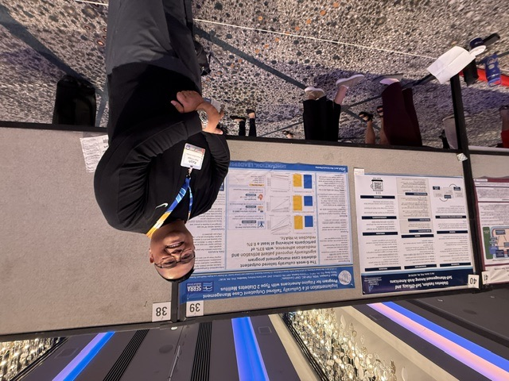
Ralph presents a poster on his DNP project.
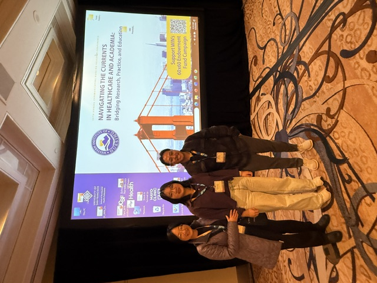
Chunyu gives a podium talk on gender differences in diabetes distress.
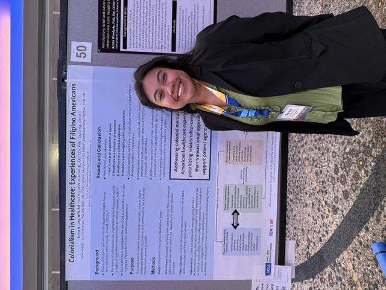
Sorina presents the Racial and Social Justice study on colonialism in healthcare.
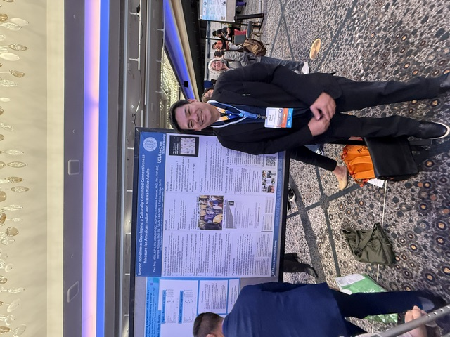
Paul presents one of several posters, including work on loneliness.
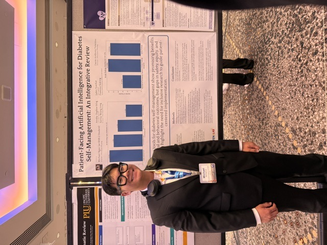
Michael presents the integrative review on patient-facing AI for diabetes self-management.
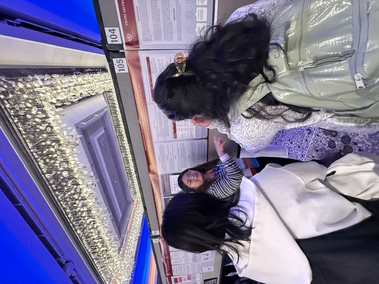
Annika presents her dissertation on Filipino American nurses and mental health.
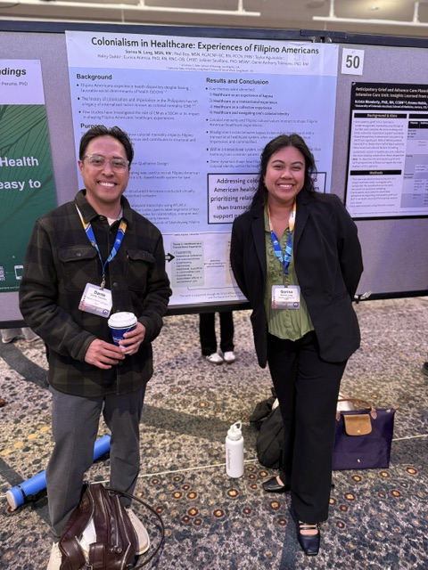
Dr. Tolentino and Sorina at WIN 2026.
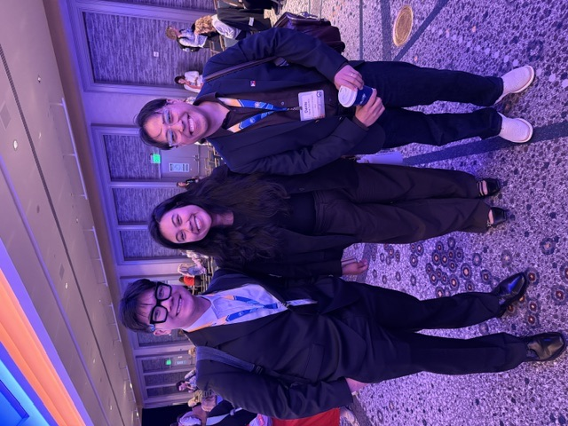
Michael, Sorina, and Dr. Tolentino at the conference.
April 21, 2026
One team: celebrating together at WIN 2026
Beyond the posters and podiums, WIN 2026 was a chance to come together as a team. Lab members and friends gathered for dinner to celebrate one another and everything the group has accomplished. Around the table were Annika Bilog, Elizabeth Kohout, Chunyu Wang, Sorina Long, Gianpiero Monreal, Paolo Roca, Edmund (Dr. Tolentino’s husband), Dr. Tolentino, Ralph Fontejon, Michael Le, and Paul Boy.
We had a lot to celebrate: Gianpiero Monreal’s acceptance to UCSF Medical School, Elizabeth Kohout’s postdoctoral position at the University of British Columbia, and everyone’s successful showing at WIN. More than anything, the evening was a reminder that we are one team, and we could not be prouder of our colleagues and all they continue to achieve. Here is to many more milestones ahead!
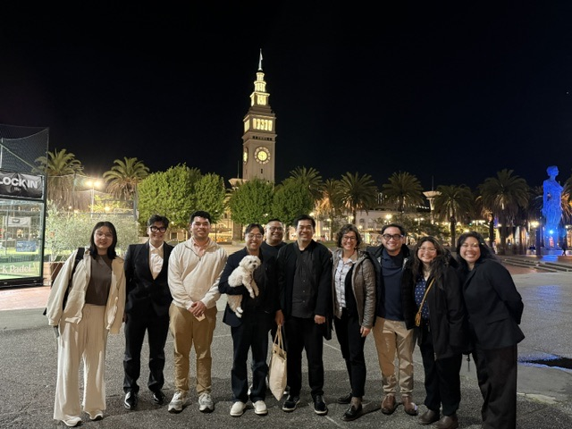
The lab and friends gather for dinner during WIN 2026.
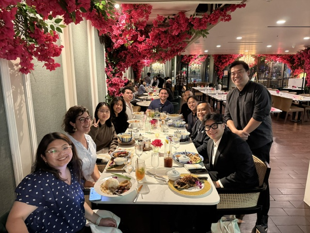
Celebrating one another and a great week together.
March 11, 2026
Machine learning meets stress science at the SBSM Annual Meeting
On March 11, 2026, the lab presented at the Society of Biopsychosocial Science and Medicine (SBSM) Annual Meeting. Dr. Tolentino presented a poster from his Hellman Fellowship project on using machine learning to integrate social determinants of health (SDOH) and allostatic load to predict dysglycemia (abnormal blood sugar). Paolo Roca presented a poster from his collaboration with Dr. Hodge, a faculty mentor outside the TenJ Lab.
SBSM brings together researchers who study how biological, psychological, and social factors shape health, a natural home for the lab’s work connecting stress, social context, and chronic disease.
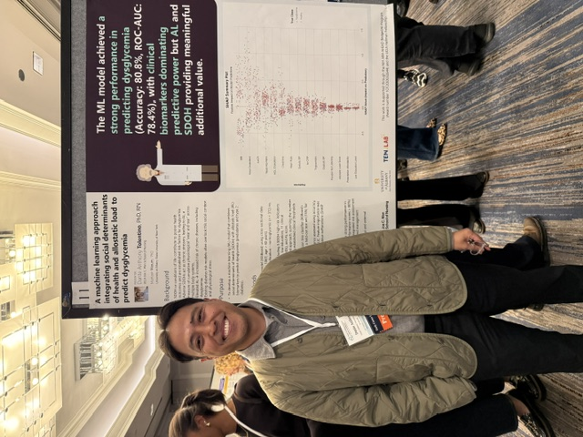
Dr. Tolentino presents his poster from the Hellman Fellowship project.
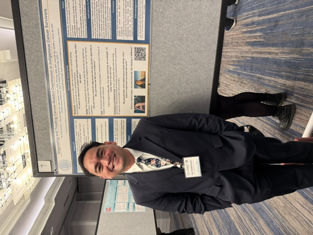
Paolo presents a poster from his collaboration with Dr. Hodge.
2025
September 17, 2025
Passing it on: Dr. Tolentino joins the MIWI Institute as a peer scholar
In September 2025, Dr. Tolentino took part in the Michigan Integrative Well-Being and Inequality (MIWI) Institute at the University of Michigan as a peer scholar. He joined a peer mentor panel, “What we don’t learn in school: Lab management,” sharing practical guidance with early-career scholars on how to start and run a research lab.
MIWI brings together scholars and faculty working at the intersection of well-being and health inequality. For Dr. Tolentino, it was also a meaningful chance to reconnect with his Michigan mentors and the community that shaped his training.
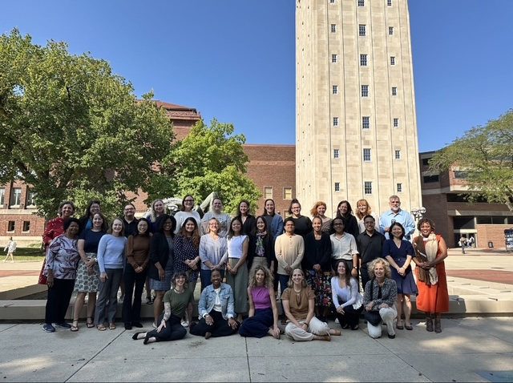
With fellow MIWI scholars and faculty.
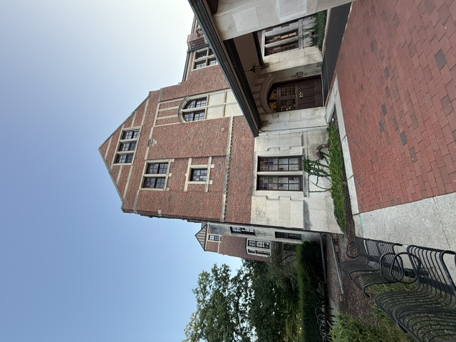
MIWI peer scholars and faculty at the University of Michigan.
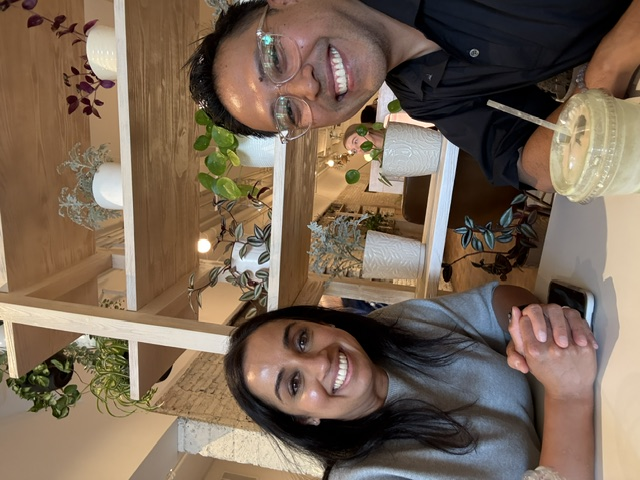
Reconnecting with his Michigan mentors.
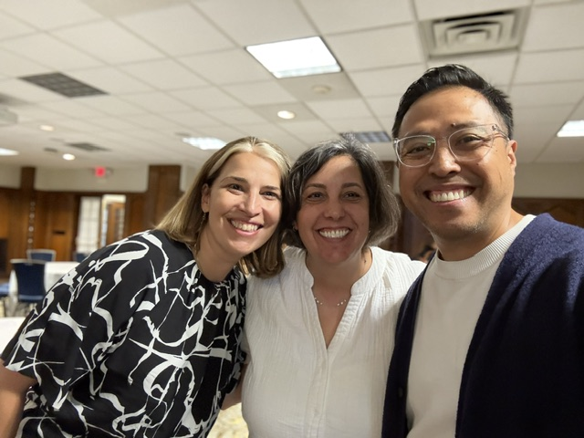
Reuniting with Michigan mentors and colleagues.
July 17, 2025
First-time presenters shine at the Sigma International Nursing Research Congress
In July 2025, the lab traveled to Seattle for the Sigma 36th International Nursing Research Congress. Gianpiero Monreal, presenting for the first time, shared the team’s work on understanding the impact of culture and environment on Filipino healthcare workers during COVID-19, a project begun about two years ago and carried largely by undergraduate students from Pilipinos for Community Health (PCH).
The Sigma International Nursing Research Congress is one of the largest global gatherings of nurse researchers, and it was a proud milestone to see our trainees share their work on an international stage.
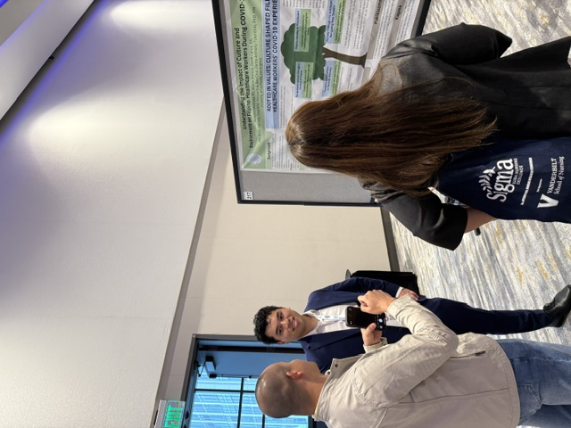
Gianpiero presents for the first time at an international congress.
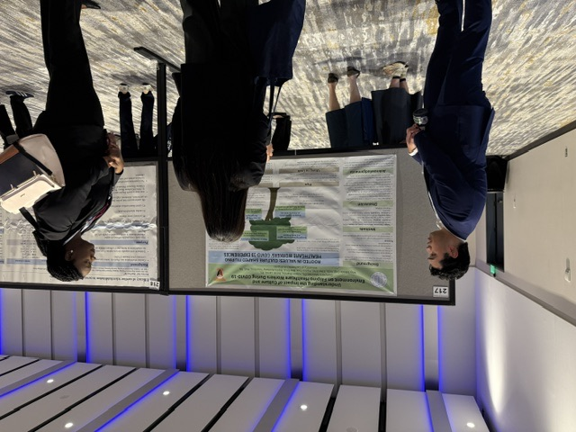
Sharing the team's work on Filipino healthcare workers during COVID-19.Paul presents the lab's qualitative work on diabetes self-management education.
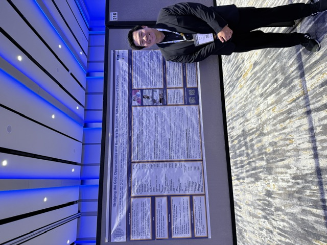
Paul at the Sigma Congress.
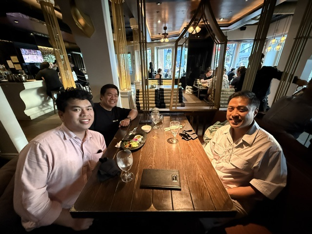
Gianpiero, Paul, and Dr. Tolentino in Seattle.
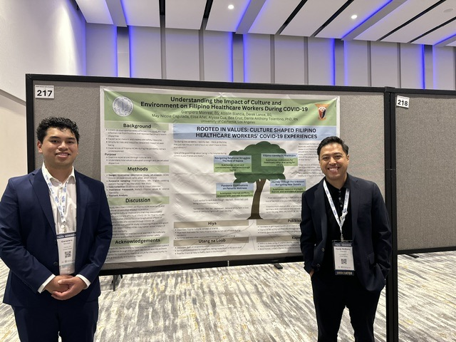
Gianpiero with Dr. Tolentino.Taking in Seattle between sessions.
AAPINA brings together nurses and scholars dedicated to the health of Asian American, Native Hawaiian, and Pacific Islander communities.
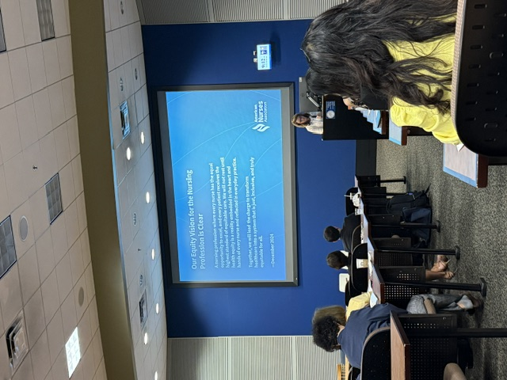
The AAPINA 2025 Conference at the University of Texas at Arlington.
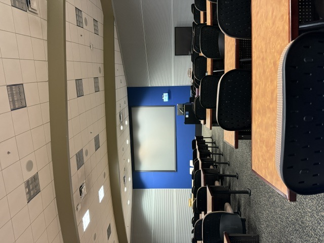
Inside the conference sessions.
July 8, 2025
Can a sense of coherence protect the body? Dr. Tolentino at AIM-AHEAD
In July 2025, Dr. Tolentino, an AIM-AHEAD fellow, presented at the 2025 AIM-AHEAD Annual Meeting in Addison, Texas. His poster, “Can sense of coherence protect the body? Salutogenic pathways to physiological stress,” explores whether a person’s sense of coherence, the feeling that life is understandable, manageable, and meaningful, may help buffer the body’s physiological response to stress.
AIM-AHEAD (the Artificial Intelligence/Machine Learning Consortium to Advance Health Equity and Researcher Diversity) is an NIH initiative that builds AI and machine learning capacity among researchers from underrepresented communities, with a focus on health equity.
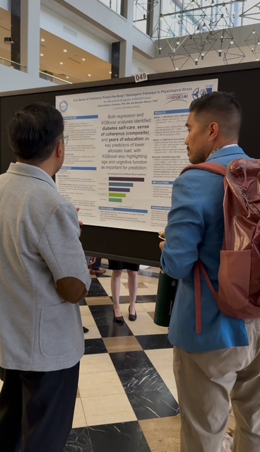
Dr. Tolentino presents at the 2025 AIM-AHEAD Annual Meeting.Sharing work on sense of coherence and physiological stress.
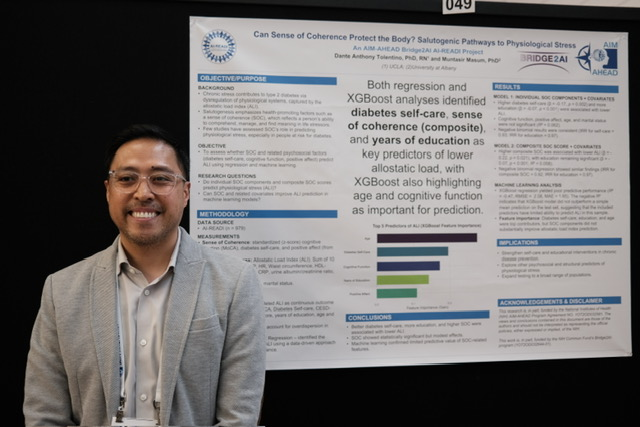
At the AIM-AHEAD Annual Meeting in Addison, Texas.
June 15, 2025
A week at Harvard: the Emotional Well-Being and Physical Health Summer Course
From June 15 to 21, 2025, Dr. Tolentino took part in the Emotional Well-Being and Physical Health Summer Short Course in Boston, a one-week intensive program offered jointly by the Harvard T.H. Chan School of Public Health and University College London (UCL).
The course explores the relationship between positive emotional well-being and physical health, with a focus on how to measure well-being, the biological and social processes that link emotional and physical health, and the epidemiological methods used to study them. It was a valuable chance to learn alongside scholars from around the world and to bring new tools back to the lab’s work on stress, well-being, and chronic disease.
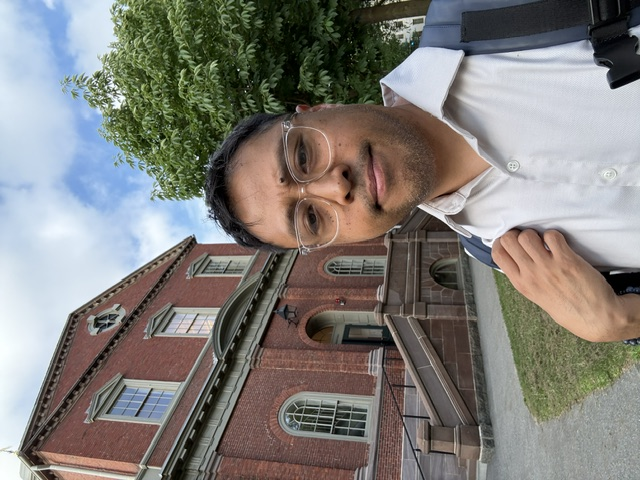
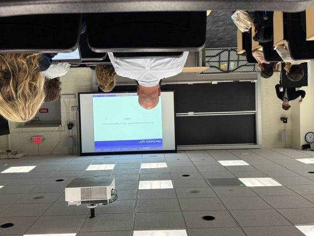
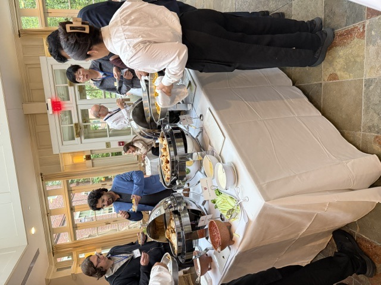
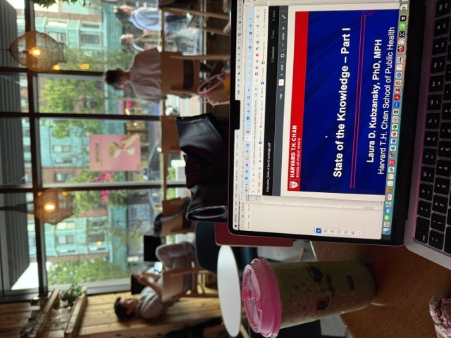
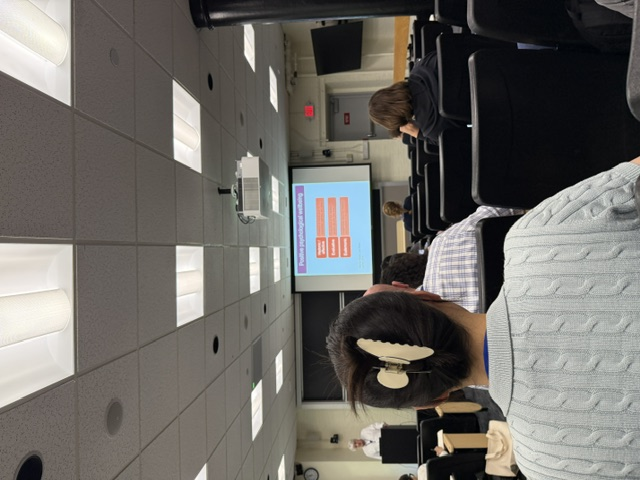
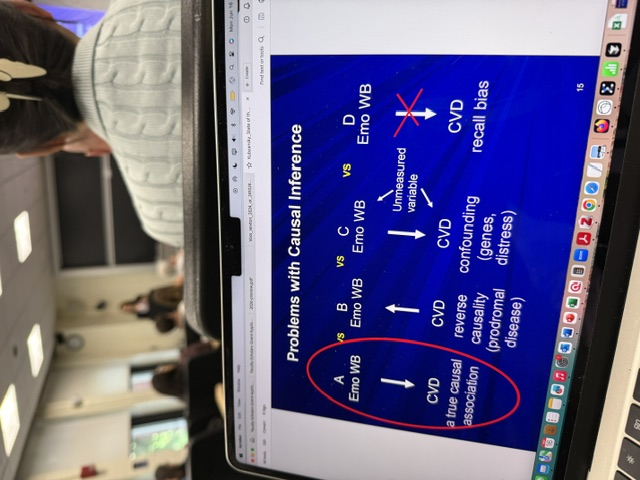
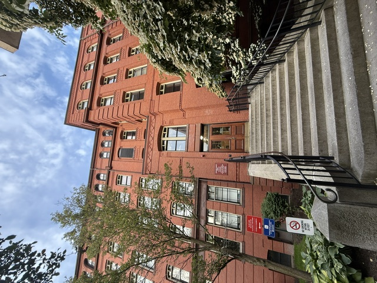
June 14, 2025
Congratulations to the UCLA School of Nursing Class of 2025
The TenJ Lab celebrated commencement at the UCLA School of Nursing on June 14, 2025 at Royce Hall, where three doctoral students Dr. Tolentino mentored on their committees crossed the stage.
Congratulations to all three new doctors! Watching trainees grow into independent scholars and clinicians is one of the greatest joys of the lab, and we cannot wait to see all that they accomplish next.
Dr. Alex Kim at commencement.Dr. Nahid Karimi with Dr. Tolentino.Dr. Mayumi Saiki at commencement.Celebrating with graduates and colleagues.
May 28, 2025
Bea Cruz brings the PCH study to the UCLA Nursing Science and Innovation Conference
In May 2025, the lab took part in the UCLA Nursing Science and Innovation Conference. Bea Cruz presented a working poster from the Pilipinos for Community Health (PCH) study on the experiences of Filipino healthcare workers during COVID-19, the same community-engaged project the team has carried to national conferences this year.
Bea presents the PCH study poster.The working poster on Filipino healthcare workers during COVID-19.
May 17, 2025
Spring get-together: celebrating milestones
On May 17, 2025, the lab gathered for our spring get-together to celebrate several milestones. We marked Sorina Long’s graduation from the Master’s Entry Clinical Nursing (MECN) program and Dr. Mayumi Saiki’s successful PhD defense and upcoming move to Vanderbilt University for her postdoctoral fellowship. The afternoon brought together Sorina Long, Jaden Tonthat, Paul Boy, Lisa Diaz, Annika Bilog, Mayumi Saiki, Taylor Aguinaldo, and Haley Dablo for food, laughter, and celebration.
Gatherings like these are a reminder of how much we value one another beyond the work. Congratulations to Sorina Long and Dr. Saiki!
The lab gathers for our spring get-together.Celebrating Sorina's graduation from the MECN program.Celebrating Dr. Mayumi Saiki's PhD defense and move to Vanderbilt.Good food and good company.Celebrating one another's milestones.
May 2025
Two DNP milestones: Alex Kim and Nahid Karimi present their projects
In May 2025, two doctoral students whose committees Dr. Tolentino served on presented their DNP projects. Alex Kim presented his project on culturally tailored, video-based education to build dementia caregiver self-efficacy among Hispanic caregivers. Nahid Karimi presented her project on continuous glucose monitoring for glycemic control in non-insulin-treated patients with type 2 diabetes. Dr. Tolentino served on Alex Kim’s committee and chaired Nahid Karimi’s. Congratulations to both on this major milestone toward their doctorates!
Alex Kim presents his DNP project.Nahid Karimi presents her DNP project.Nahid Karimi at her DNP project presentation.
April 8, 2025
From AI to diabetes: the lab at the 2025 Western Institute of Nursing Conference
Lisa Diaz presented her study analyzing the quality of colorectal cancer content on TikTok. Dr. Tolentino presented “To chat or not to chat: A comparative analysis of ChatGPT and a statistical program,” comparing the data-analysis capability of ChatGPT-4o with SPSS on cross-sectional data, work that led to the lab’s forthcoming paper “Vibe coding for statistical analysis using large language models,” now in press at Nursing Research. Dr. Mayumi Saiki presented her PhD work on work-family conflict and metabolic risk. Paul Boy presented a poster on cancer-related fatigue among American Indian men, conducted as part of Dr. Hodge’s lab, and a podium talk on autoethnography, “a nurse practitioner’s journey through the PhD experience.” Nahid Karimi presented a poster on her DNP project, continuous glucose monitoring for glycemic control in non-insulin-treated patients with type 2 diabetes.
It was a wonderful showcase of the lab’s range, spanning digital health and AI, cancer, well-being, and diabetes.
Dr. Tolentino presents “To chat or not to chat,” comparing ChatGPT-4o and SPSS.Dr. Tolentino at the 2025 WIN Conference.Lisa presents her study on colorectal cancer content on TikTok.Dr. Mayumi Saiki presents her PhD work on work-family conflict.Dr. Tolentino with Nahid Karimi.Paul presents his autoethnography of a nurse practitioner's PhD journey.Paul's poster on cancer-related fatigue among American Indian men.
2024
November 17, 2024
Serving the community: a health fair at Glory Church of Jesus Christ
On November 17, 2024, Dr. Tolentino served as nursing faculty at a community health fair at Glory Church of Jesus Christ in Los Angeles, organized by APAHC in partnership with the church. The fair offered free health screenings to the local community, including blood pressure, height and weight, body composition, vision, and dementia screening, along with general health guidance and referrals to free or low-cost care.
Dr. Tolentino worked alongside UCLA nursing students and undergraduate volunteers from APINSAA and the Coalition for Healthcare Improvement, bringing classroom learning into hands-on, community-centered care.
Dr. Tolentino and UCLA nursing students at the community health fair.Offering free health screenings to the community.Serving the community at Glory Church of Jesus Christ.
November 17, 2024
Giving thanks: a Thanksgiving gathering in West Hollywood
On November 17, 2024, a small group of the team came together in West Hollywood for a Thanksgiving get-together. Derek Lance, Taylor Aguinaldo, Haley Dablo, Sorina Long, Nahid Karimi, Mayumi Saiki, and Paul Boy shared a meal and a chance to slow down at the end of a busy year. With much to be thankful for, what stood out most was gratitude for this community of scholar colleagues.
The team gathers in West Hollywood for a Thanksgiving get-together.Sharing a meal and good company.Grateful for this community of scholars.
November 14, 2024
At the 2024 State of Diabetes in Southern California
On November 14, 2024, Dr. Tolentino took part in the American Diabetes Association’s 2024 State of Diabetes event in Southern California, connecting with advocates, clinicians, and community partners working to address the region’s diabetes burden.
At the 2024 State of Diabetes event.Connecting with the Southern California diabetes community.Advocates and clinicians united against diabetes.
August 5, 2024
Selected for the NIH Health Disparities Research Institute
In August 2024, Dr. Tolentino was selected as a fellow for the NIH National Institute on Minority Health and Health Disparities (NIMHD) Health Disparities Research Institute (HDRI), held August 5 to 9, 2024 on the NIH campus in Bethesda, Maryland. The weeklong program offers a unique opportunity to learn about current health disparities research, connect with experts in the field, and gain insight into the NIH grant review process.
On the NIH campus in Bethesda, Maryland.At the NIH Health Disparities Research Institute.Dr. Tolentino receives his certificate from the institute’s director.With fellow HDRI scholars.Exploring Washington, DC during the week.
June 2024
Celebrating Matthew Peña at the 2024 UCLA School of Nursing commencement
At the UCLA School of Nursing 2024 commencement, the lab celebrated Matthew Peña’s graduation from the Master’s Entry Clinical Nursing (MECN) program. Congratulations, Matthew Peña, on this wonderful milestone!
Matthew Peña at the 2024 commencement.Celebrating Matthew's graduation from the MECN program.Celebrating together at commencement.
May 18, 2024
Community and recruitment at the Philippine Nurses Association celebration
On May 18, 2024, the lab attended the Philippine Nurses Association celebration in Glendale. Alongside celebrating the community, Paolo Roca and Sorina Long staffed a table to recruit participants for our qualitative study on Asian Americans’ experiences navigating type 2 diabetes.
Paolo and Sorina recruiting study participants.The Philippine Nurses Association celebration in Glendale.
May 2024
Grateful for our scholars: a spring 2024 get-together
In May 2024, several TenJ Lab members gathered for a spring get-together, including Paolo Roca, Derek Lance, Gianpiero Monreal, Matthew Peña, and Sorina Long. As always, we are thankful for these scholars and the community we share.
May 2024
Jaden Tonthat completes the NP3 Nursing Professoriate Pathway Program
In May 2024, Jaden Tonthat completed the Nursing Professoriate Pathway Program (NP3) at the UCLA School of Nursing. NP3 is a four-week residential summer program that aims to attract students from underrepresented backgrounds and guide them toward doctoral studies, helping to build the next generation of nursing faculty. Congratulations, Jaden Tonthat!
Jaden at the NP3 program.With the NP3 cohort at the UCLA School of Nursing.
March 20, 2024
Presenting in Brighton: financial toxicity and diabetes at the SBSM Annual Meeting
From March 20 to 24, 2024, Dr. Tolentino and Paolo Roca traveled to Brighton, United Kingdom for the 2024 Annual Meeting of the Society of Biopsychosocial Science and Medicine (then known as the American Psychosomatic Society). They presented their work on financial toxicity and diabetes, examining how the financial burden of managing diabetes weighs on patients’ lives and well-being.
Presenting on an international stage was an exciting milestone for the lab, and a chance to connect with researchers from around the world who study the links between mind, body, and social context in health.
Dr. Tolentino at the SBSM Annual Meeting.Paolo presents the team's work on financial toxicity and diabetes.Paolo at the conference.Dr. Tolentino in Brighton.Dr. Tolentino with Edmund in the UK.Connecting with colleagues at the meeting.The seaside city of Brighton, United Kingdom.Brighton, host of the 2024 meeting.Exploring London along the way.
2023
September 13, 2023
From pilot to publication: the UC END DISPARITIES Annual Meeting at UC Irvine
Dr. Tolentino presents his pilot work at the meeting.The UC END DISPARITIES Annual Meeting at UC Irvine.Conversations on intersectionality and health equity.At UC Irvine for the annual meeting.
August 25, 2023
At the 2023 AAPINA Conference in Los Angeles
In August 2023, Dr. Tolentino attended the 2023 Asian American/Pacific Islander Nurses Association (AAPINA) Conference, held August 25 to 26 at Cedars-Sinai Medical Center in Los Angeles. AAPINA brings together nurses and scholars committed to the health of Asian American, Native Hawaiian, and Pacific Islander communities.
June 17, 2023
A first commencement as faculty
Dr. Tolentino attended the UCLA School of Nursing 2023 commencement, his first since joining the faculty. Celebrating the new graduates from the other side of the stage was a meaningful milestone.
Royce Hall, the setting for UCLA commencement.Celebrating at the 2023 commencement.The 2023 commencement program.
May 23, 2023
Dr. Tolentino inducted as a Fellow of AMIA (FAMIA)
In May 2023, Dr. Tolentino was inducted as a Fellow of the American Medical Informatics Association (FAMIA) at AMIA’s gathering in Chicago, held May 23 to 25. The FAMIA designation recognizes professionals who have made significant, sustained contributions to applied informatics and shown leadership in the field. The honor reflects Dr. Tolentino’s expertise in nursing informatics and his commitment to using health data and technology to advance equitable, patient-centered care.
Dr. Tolentino at the FAMIA induction.Celebrating the new class of Fellows.At the American Medical Informatics Association gathering in Chicago.With fellow inductees.
April 19, 2023
Mapping diabetes care gaps at the 2023 Western Institute of Nursing Conference
From April 19 to 22, 2023, Dr. Tolentino presented at the Western Institute of Nursing (WIN) Conference in Salt Lake City, Utah. The poster, on the geospatial mapping of diabetes programs and an equity index among Asian Americans in Los Angeles, used mapping to show where diabetes education and prevention programs sit relative to where Asian American communities live, surfacing gaps between need and access across the city.
By layering program locations with an equity index, the work points to underserved neighborhoods and where resources could be directed to close gaps in diabetes care. This study was funded by the UC END DISPARITIES grant.
Dr. Tolentino's poster on geospatial mapping of diabetes programs.Salt Lake City, host of the 2023 WIN Conference.At the 2023 Western Institute of Nursing Conference.
March 8, 2023
Cultural shame and colonial mentality at the 2023 APS Annual Meeting in Puerto Rico
The poster on cultural shame and cultural inferiority among Filipino Americans.Dr. Tolentino and Paolo at the APS Annual Meeting.Paolo presents the team's work.With colleagues at the meeting.At the 2023 APS Annual Meeting.Puerto Rico, host of the 2023 meeting.Exploring Puerto Rico.Puerto Rico.
February 3, 2023
An invited talk at Charles Drew University: colonialism and diabetes
On February 3, 2023, Dr. Tolentino was invited to give an online presentation for Charles Drew University (CDU) on colonialism and diabetes among Filipino Americans, as part of CDU’s Advantage Student and Faculty Development Series.
2022
October 14, 2022
Mentoring the next generation: a PCH pre-health panel at UCLA
On October 14, 2022, Dr. Tolentino took part in a Health Graduate Student Panel hosted by Pilipinos for Community Health (PCH) at UCLA. PCH is an undergraduate student organization dedicated to providing free health services to underserved communities in the Greater Los Angeles area and in the Philippines. Through quarterly pre-health panels, PCH mentors students toward informed health career choices and helps develop the next generation of health professionals. Dr. Tolentino joined fellow graduate and professional students to share guidance with undergraduates exploring careers in the health professions.
August 2022
Where it began: starting at UCLA and founding the TenJ Lab
In August 2022, just a few months into joining the UCLA School of Nursing as a faculty member, Dr. Tolentino celebrated the start of a new chapter on campus, with family by his side. It marked the beginning of the TenJ Lab and its mission: to empower historically and contemporarily marginalized communities, such as Filipino Americans, using nursing science and informatics to build a future of equitable diabetes prevention and management.
Named in honor of his father, Jessie, the lab carries forward a deeply personal commitment to health equity. Excited and grateful, this was the first step in a journey to make a mark through research that centers community, culture, and care.
On the UCLA campus at the start of a new chapter.Celebrating the journey with family.With family at UCLA.